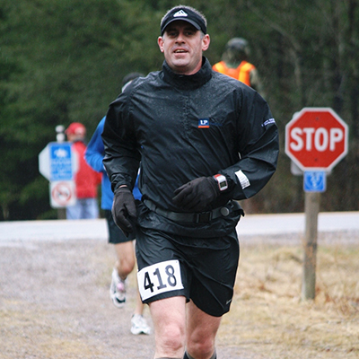
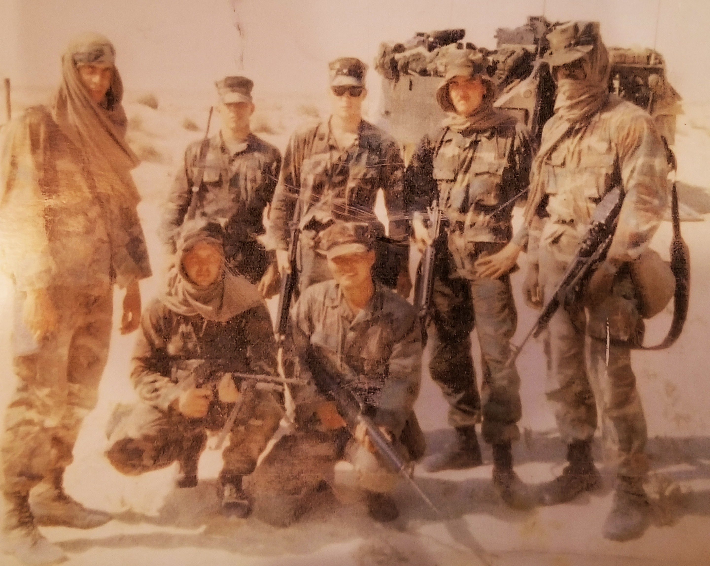
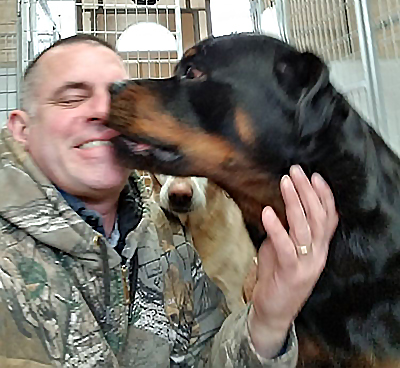

Mike England
Meet Mike England
Mike is the owner/operator of Dragon’s Heart Dog Kennels. Mike is from Tripoli Wisconsin. Mike has had an interesting life. He is a Master Mason and was the Senior Warden of his Lodge. He has helped raise many thousands of dollars through “The Walk for a Cure” which he organized. This fundraiser was a 60+ mile walk from Rhinelander, WI to Wausau, WI. Not only did Mike organize the walk, he also completed it. Mike has also sucessfully completed several other long runs including the Pine Lane Marathon and North Face 50 mile endurance run in the Kettle Moraine State Park in Wisconsin.
"What am I most proud of...My wife and my kids and my dogs..of course. They have shown me the importance of being the best person you can be at all levels. Nothing is impossible. Being the example above all things. The physical things I have done are great and have helped me grow but are not the meaning of life. There is a spiritual standard we must make ourselves adhere to. That is where we need to grow. Being more kind, more compassionate, more tolerant. At the end you will know you have lived a Good life. “ – Mike England
Military Service and Cage Fighting Experience

Mike has experience in Mixed Martial Arts and has trained with Marco Ruas,the UFC 7 champion, in Brazil. There he learned a fighting technique called Ruas Vale Tudo, which is a mix of submission wrestling and kickboxing. He has also trained in Brazilian Jiu-Jitsu. "When I first met Mike he had a training setup in his garage and he showed me how he trained. He would punch a quarter inch thick steel plate mounted to car springs." - Jake Seever. Mike has climbed into the octagon with Xtreme Kage Kombat for two fights. He remains undefeated.

Mike was also a Marine and a veteran of the Gulf War in Iraq. He was a member of a machine gun team. He has spent time in Germany and been to many other places around the globe during his years of service. One time his during his experience in the Corp, his unit left him behind. They accidentally stepped over him. He could see the radio towers above his camp 8000 meters away. Unfortunately, he had to walk through the impact area, an area of unexploded ordinance bombs, mortar shells, cluster bombs, etc. He said to himself “Let’s do this S***”. It took him 6 hours without any water but he made it back to camp. One guy saw this and said “Only you England would have pulled that s*** off”. He was legendary in the camp after that.
Dragons Heart Kennels
Mike is very mechanically savvy and was the Maintenance Lead at a large plant that engineers wood products. This was a good job but was very stressful and was not what Mike was passionate about. He was passionate about working with animals, particularly dogs. He has four huskies of his own. This last year Mike took a risk and opened his own dog kenneling business. He built his facility with his own hands. The building has an excellent heating and cooling system to keep the dogs comfortable. Temperature monitors and cameras on the living facilities to make sure that the dogs are safe. He has gained some inspiration and knowledge from Cesar Millan, the dog whisper. Including how dogs think in the pack mentality. Mike makes sure to get the dogs plenty of outside time to play in the large fenced in yard. He also has built and setup obstacles to help train the dogs. He makes exercise fun for the dogs. The dogs are living well when they stay with Mike at Dragons Heart Kennel. His kennel has only received five-star reviews and his clients has been more than pleased with his service. They love how their pets are treated. After taking a risk and following his dream, Mike is now the owner of a growing and business that he truly enjoys running.
“It was only years after Dragon passed away, a Shephard/Husky mix, that I truly realized his value and heart. Near the end of his life I was at the lowest point in mine. When family and friends basically wrote me off and no one was there to help or even care, he was there. He was one thing that would give everything of himself to me and love me truly unconditionally. He was by my side always. My only regret is I didn't realize his heart sooner. I think of him every day and hope that he can see what I have done from where he is. Dogs are just the best of everything. They are pure and uncorrupted. Their species has been far more tolerant of our species than we are of theirs, yet they give us all of themselves. I will spend the rest of my days giving back. I won't get rich, I will have to work harder than I had to before but at the end of the day, I love what I do and I feel there is value in this work. It is a value of compassion and love. Something the world could use a lot more of. “- Mike England
Go To Top